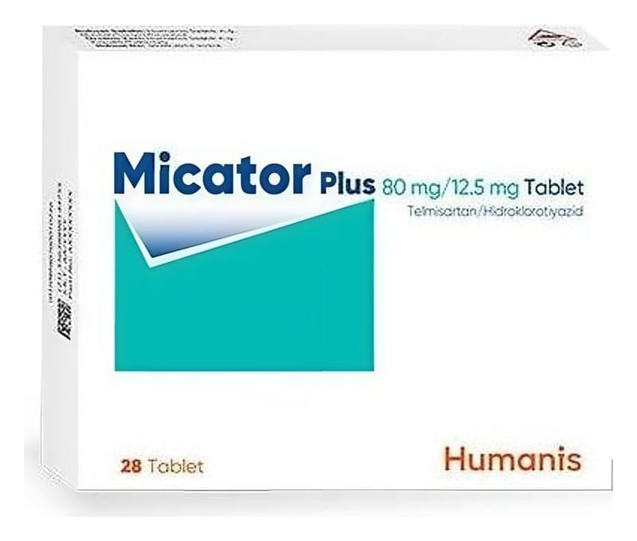

Micator-Plus-80-12.5-Mg-Tablet, Tablet, 28 Adet

Ne için kullanılır
KT · Bölüm 1MİCATOR PLUS, beyaz ve kırmızı renkli, çift katmanlı, oblong şeklinde, her iki yüzü çentiksiz tabletler şeklindedir.
MİCATOR PLUS 28, 84 ve 98 adet tablet içeren Alu-Alu ve Aluminyum folyo 25 μm blister ambalajlarda piyasaya sunulmaktadır.
MİCATOR PLUS, telmisartan ve hidroklorotiyazid adı verilen iki etkin madde içerir. Her iki madde de yüksek kan basıncını kontrol etmeye yardımcı olur.
• Telmisartan, “anjiyotensin-II reseptör antagonistleri” adı verilen bir ilaç grubuna aittir. Anjiyotensin II vücudunuz tarafından üretilen bir maddedir, kan damarlarınızı daraltarak kan basıncınızın yükselmesine neden olur. Telmisartan, anjiyotensin II' maddesinin bu etkisini engelleyerek kan damarlarınızı gevşetir ve böylelikle kan basıncınızı düşürür.
Bu ilacı kullanmaya başlamadan önce bu KULLANMA TALİMATINI dikkatlice okuyunuz, çünkü sizin için önemli bilgiler içermektedir. • Bu kullanma talimatını saklayınız. Daha sonra tekrar okumaya ihtiyaç duyabilirsiniz. • Eğer ilave sorularınız olursa, lütfen doktorunuza veya eczacınıza danışınız. • Bu ilaç kişisel olarak sizin için reçete edilmiştir, başkalarına vermeyiniz. • Bu ilacın kullanımı sırasında, doktora veya hastaneye gittiğinizde bu ilacı kullandığınızı doktorunuza söyleyiniz. • Bu talimatta yazılanlara aynen uyunuz. İlaç hakkında size önerilen dozun dışında yüksek veya düşük doz kullanmayınız.
• Hidroklorotiyazid tiyazid grubu diüretikler adı verilen bir ilaç sınıfına dahildir. Hidroklorotiyazid çıkardığınız idrar miktarını artırarak kan basıncınızın azalmasını sağlar.
Kan basıncı yüksekliği tedavi edilmediği takdirde çeşitli organlarda kan damarlarının zarar görmesine neden olabilir. Bu durum bazen kalp krizi, kalp yetmezliği, böbrek yetmezliği, inme veya körlüğe yol açabilir. Genellikle hasar oluşmadan önce kan basıncı yüksekliği bir belirti vermez. Bu nedenle, kan basıncının normal sınırlarda olup olmadığını düzenli olarak kontrol etmeniz çok önemlidir.
MİCATOR PLUS, telmisartanın tek başına kullanılması ile kan basıncı yeterince kontrol altına alınamayan erişkin hastalarda, yüksek tansiyonun (esansiyel hipertansiyon) tedavisinde kullanılır.